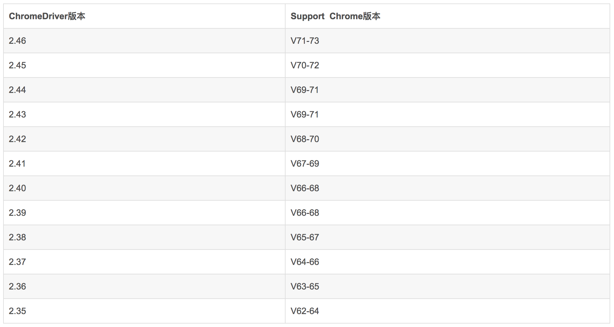
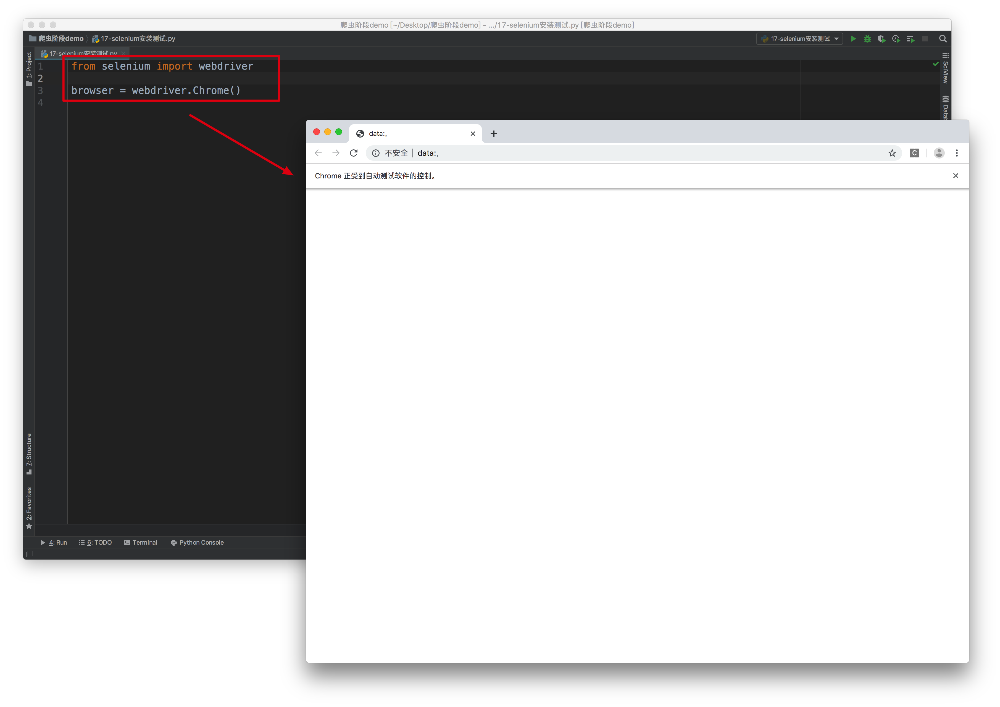
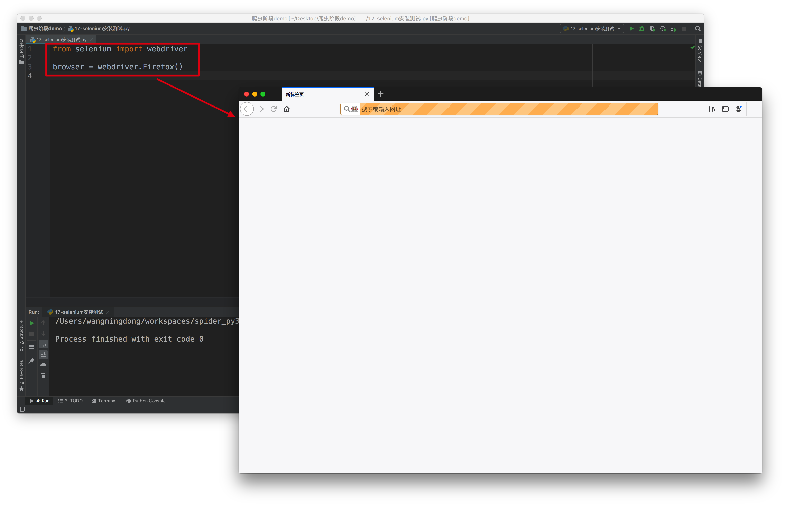

Selenium介绍
学习目标
- 了解 selenium的作用
- 了解 driver的安装过程
1. 用Selenium的原因
有很多网站，例如淘宝，它上面的很多页面 的数据是由JavaScript生成的，而不是原始HTML代码，而且还有很多ajax获取的数据，甚至有些数据是加密的，导致，当我们使用普通的requests来处理时，需要分析很多的js代码，此时非常困难，所以我们就用Selenium来解决
2. 什么是Selenium
Selenium是一个Web的自动化测试工具，最初是为网站自动化测试而开发的，利用它可以控制浏览器执行特定的动作，例如点击、下拉、输入内容等
官方网站：https://www.seleniumhq.org/
中文参考网址：http://www.selenium.org.cn/
其他参考网址：https://selenium-python.readthedocs.io/
3. Selenium的安装
安装的命令如下：
pip install selenium
安装完selenium后，还需要安装使用selenium控制的浏览器需要的驱动，例如
如果使用chrome浏览器，则安装ChromeDriver等，驱动的安装看下面
4. 安装浏览器驱动
ChromeDriver的安装
参考下表，根据自己的浏览器版本去下载对应的ChromeDriver：

下载地址：http://npm.taobao.org/mirrors/chromedriver/
安装方式是：
解压后把bin目录下的可执行文件移动到环境变量下，比如/usr/bin 或者是/usr/local/bin下面
编写如下代码，验证是否安装成功：
from selenium import webdriver
browser = webdriver.Chrome()
运行如上代码，如果能够打开chrome浏览器，则表示成功

GeckoDriver的安装
如果你喜欢使用Firefox浏览器，那么就可以现在安装GeckoDriver来进行驱动控制Firefox浏览器
下载地址：https://github.com/mozilla/geckodriver/releases
测试安装的方式如下：
编写如下代码，然后运行，如果能够打开Firefox浏览器则表示成功

PhantomJS安装
PhantomJS 是一个基于Webkit的“无界面”(headless)浏览器，它会把网站加载到内存并执行页面上的 JavaScript
它的特点：
- 因为没有界面渲染，所以它的速度稍快
因为没有界面，所以刚开始学习selenium不太方便
小结
- 能够安装PhtantomJs和Chromedriver浏览器的驱动程序
- 能够知道selenium是自动化测试工具